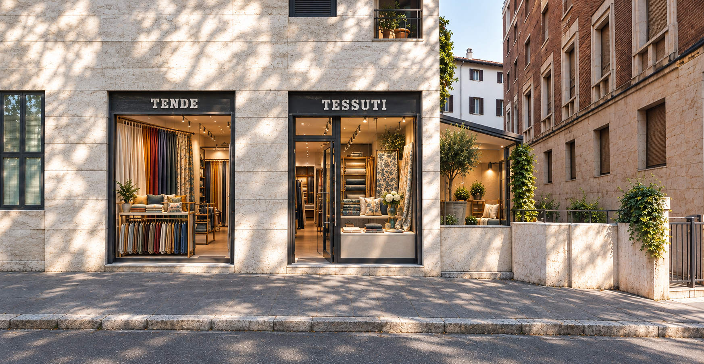
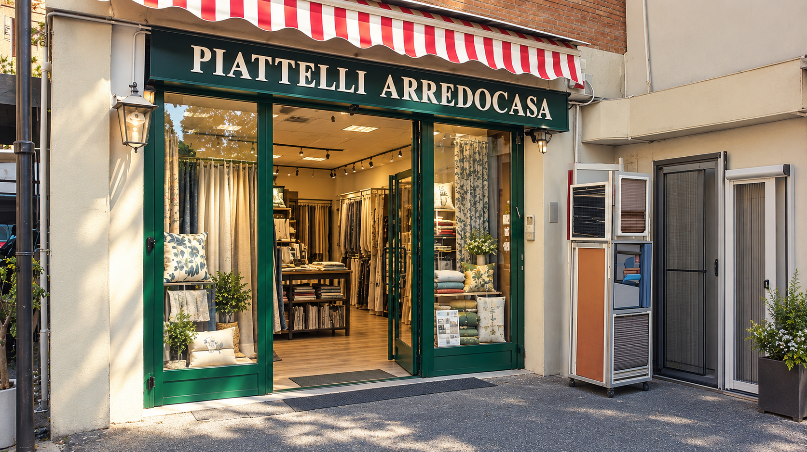

Produzione e confezione diretta nel grande laboratorio di Via Federico Tozzi 21 e punto consulenza in centro in Lungotevere Marzio 10. Garanzia fino a 8 anni e posa specializzata.

Nessun intermediario: produciamo e confezioniamo le tende direttamente a Via Tozzi 21.
Tessuti ad alta resistenza UV e strutture certificate per resistere agli agenti atmosferici.
Montaggio pulito e preciso effettuato solo da personale interno qualificato.


"Tenda da sole installata sul mio terrazzo a Prati. Materiali eccezionali e montaggio veloce."
Stefano R. — Roma"Sopralluogo preciso e preventivo trasparente. Il telo è resistente e bellissimo da vedere."
Elena M. — Roma"Installato una pergotenda motorizzata. Lavoro pulito e grande professionalità."
Marco V. — Roma EUR"Ottima esperienza sia nella scelta dei tessuti in centro che nella posa finale."
Laura B. — Roma Centro"Puntuali e precisi. Le tende a bracci sul balcone hanno cambiato l'esposizione di casa."
Roberto P. — Roma Monteverde"Sostituzione teli eseguita a regola d'arte. Consigliatissimi per serietà e prezzo."
Andrea C. — Roma Parioli
📍 Roma (Zona Prati / Centro)
Atelier al centro di Roma ideale per consulenze d'arredo riservate, progettazione tendaggi e selezione tessuti d'alta gamma.

📍 Roma
La sede operativa principale dove i nostri tappezzieri e sartine eseguono il restauro e il rivestimento di divani, poltrone e tendaggi.